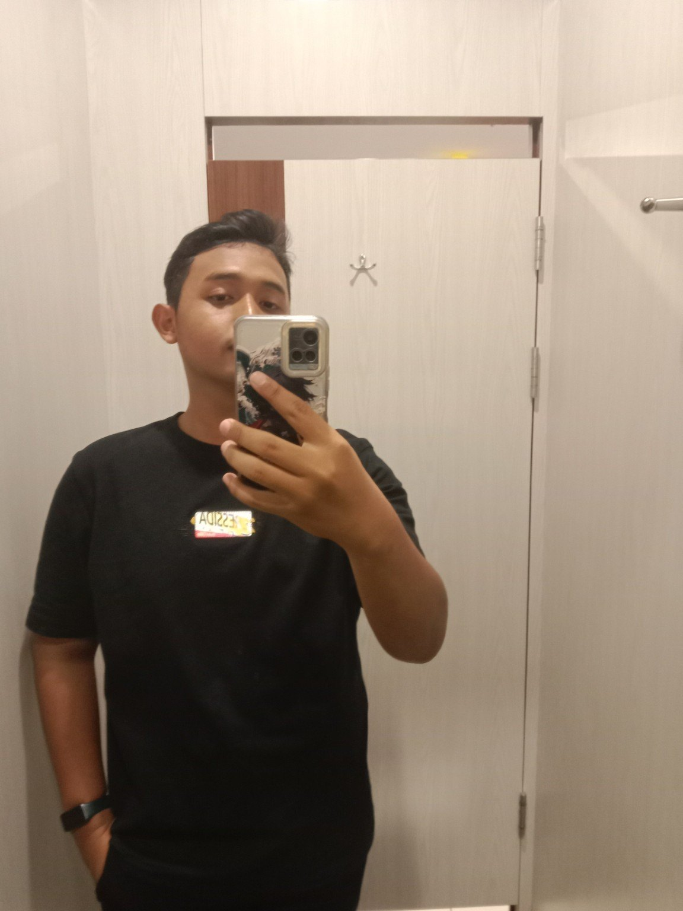
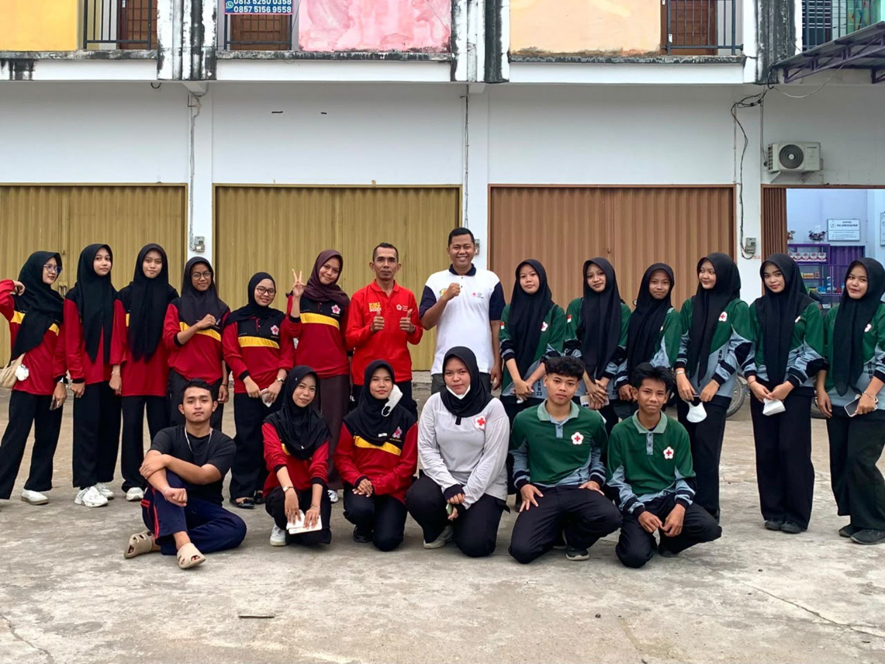
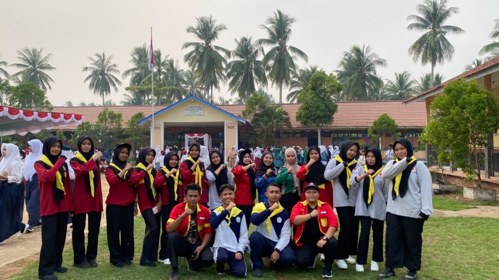
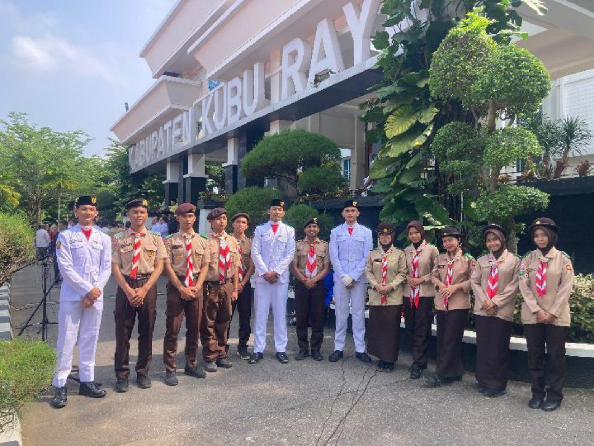
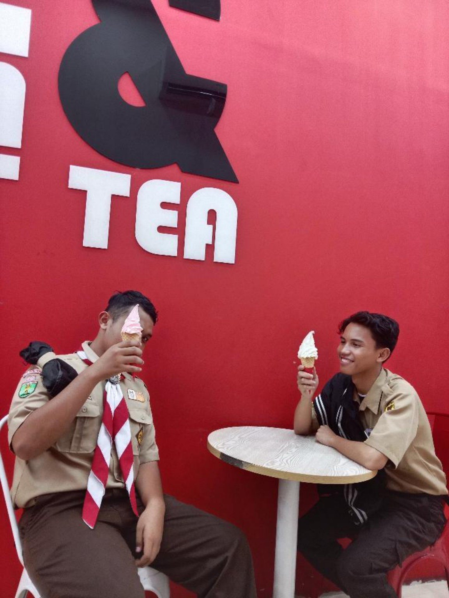
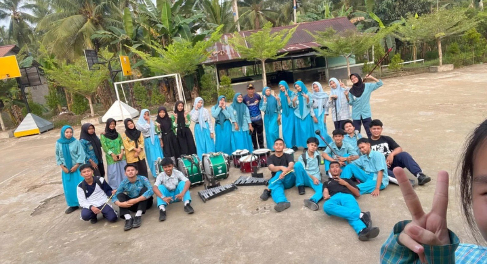
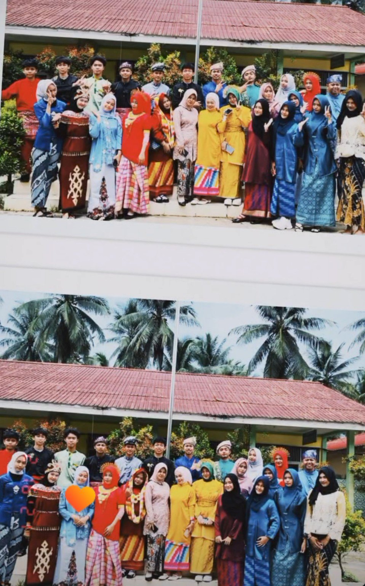
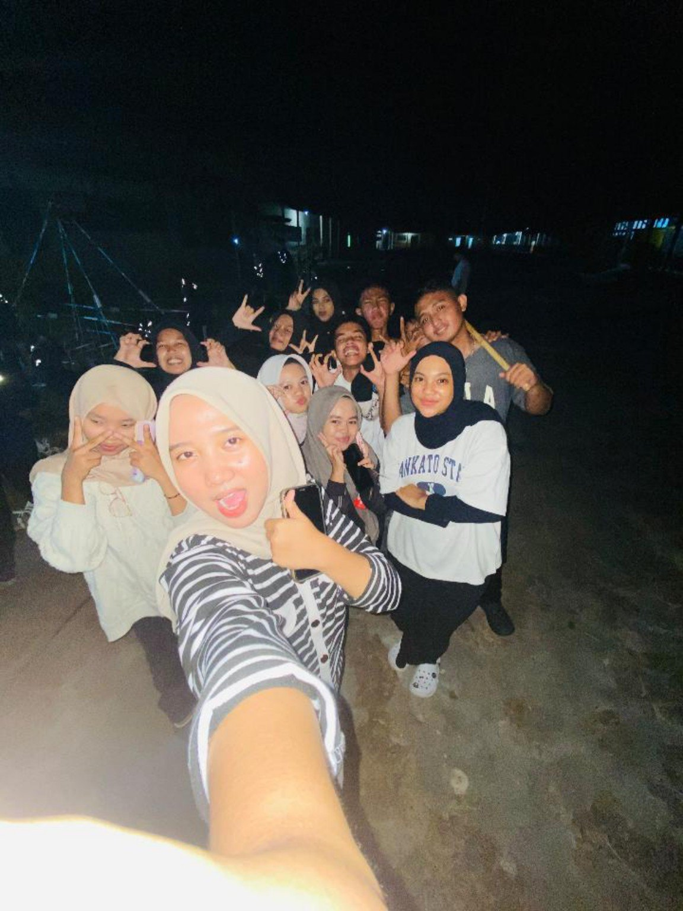
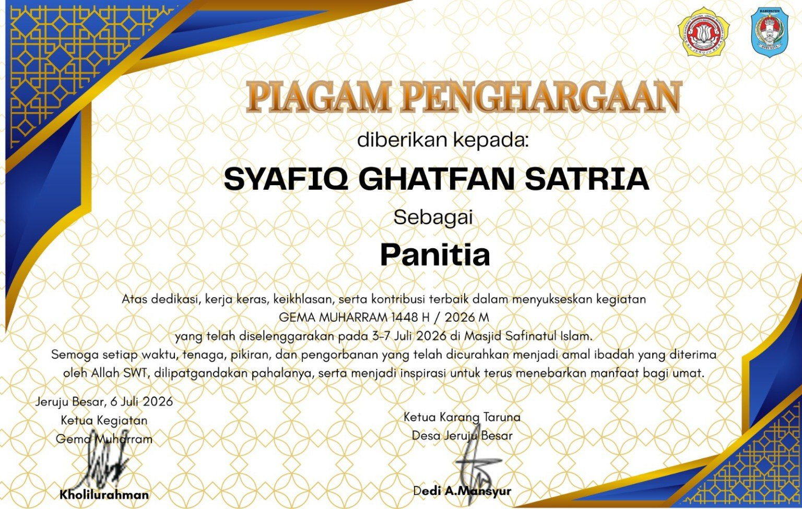

Brain Challenge
Uji logika, wawasan, dan kemampuan memecahkan teka-teki.
PRIVATE BETA · OWNER ONLYWELCOME TO MY DIGITAL WORLD
THE DIGITAL LEADERSHIP SPACE
A journey of learning, leadership, and contribution.
STUDENT LEADER · YOUTH DEVELOPMENT
Membangun kontribusi, mengembangkan kepemimpinan, dan bertumbuh bersama generasi muda.

ENTER THE DIGITAL WORLD
Tujuh ruang. Satu perjalanan yang terus bertumbuh.
Private development access for SGS owner.
Empat dunia permainan dengan tantangan, petualangan, kreativitas, dan pengalaman baru.
Uji logika, wawasan, dan kemampuan memecahkan teka-teki.
PRIVATE BETA · OWNER ONLYHadapi situasi organisasi dan tentukan keputusanmu.
PRIVATE BETA · OWNER ONLYTantangan refleks, memori, dan permainan bergaya klasik.
PRIVATE BETA · OWNER ONLYJelajahi dunia digital, temukan misi, dan kumpulkan pencapaian.
PRIVATE BETA · OWNER ONLYMusik yang menemani setiap petualangan di SGS Minigame World.
Musik dan kontrol pemutar akan diaktifkan pada tahap pengembangan berikutnya.
Selamat datang di pusat pengembangan SGS Minigame World.
Pusat pengembangan teka-teki, logika, dan tantangan pengetahuan.
IN DEVELOPMENTSimulasi keputusan dan tantangan kepemimpinan.
IN DEVELOPMENTGame refleks, memori, dan tantangan arcade.
IN DEVELOPMENTPetualangan digital dengan misi dan eksplorasi.
IN DEVELOPMENTAyo, kita pecahkan tantangan ini bersama!
Aku akan memberikan petunjuk jika kamu membutuhkannya.
Bersiaplah menguji kemampuan berpikirmu!
“Kepemimpinan bukan hanya tentang posisi, tetapi tentang keberanian untuk mendengar, belajar, dan memberi manfaat.”
02 / BEYOND THE NAME
Mengenal pribadi, nilai, dan perjalanan yang terus dibangun.
Saya adalah pelajar SMAN 2 Sungai Kakap, Kabupaten Kubu Raya, Kalimantan Barat. Saya tertarik pada kepemimpinan, organisasi, public speaking, literasi, dan pengembangan generasi muda.
Bagi saya, setiap pengalaman adalah ruang belajar. Saya ingin membangun lingkungan yang saling merangkul, memberi ruang bagi suara pelajar, dan mengubah gagasan menjadi kontribusi nyata.
CHARACTER & PRINCIPLES
Menghargai setiap orang, memberi ruang bagi pendapat, terbuka terhadap evaluasi, serta belajar bertanggung jawab atas setiap amanah.
“I am not defined by where I stand today, but by the journey I choose to build tomorrow.”
03 / LEADERSHIP & ORGANIZATION
Pengalaman organisasi adalah ruang untuk belajar bekerja sama, mendengarkan, dan bertanggung jawab.
SCHOOL LEADERSHIP
SMAN 2 Sungai Kakap
Perwakilan aspirasi dan evaluasi pelajarSCOUTING
SMAN 2 Sungai Kakap
Kepemimpinan, kedisiplinan, dan kerja samaCOMMUNITY
Jam’ul Fallah
ORGANIZATION
Dewan Kerja Ranting
VOLUNTEERING
Palang Merah Remaja
SCHOOL & COMMUNITY
Partisipasi kegiatan organisasi
COMMUNITY
Anggota
LEADERSHIP PHILOSOPHY
Bukan tentang seberapa tinggi posisi seseorang, tetapi seberapa besar kemampuannya merangkul, mendengarkan, menghargai, dan membawa orang lain berkembang bersama.
Memimpin bukan hanya mengarahkan, tetapi juga memahami.EXPERIENCE & DOCUMENTATION
Dokumentasi perjalanan dalam organisasi, kegiatan, dan kebersamaan. Galeri ini menjadi arsip pengalaman yang dapat terus bertambah.







Foto ditampilkan sebagai dokumentasi pengalaman. Keterangan kegiatan yang belum terverifikasi tidak dibuat-buat.
04 / ACHIEVEMENTS & RECOGNITION
Penghargaan, sertifikat, dan pengalaman yang menjadi bagian dari proses belajar.
Prestasi tingkat SMP dan kegiatan antarkelas, sesuai sertifikat yang dimiliki.
Kompetisi tingkat SMP.
Kegiatan antarkelas.
Pengalaman mengikuti kompetisi tingkat kota; bukan klaim peraih medali.

CERTIFICATE · 2026
Piagam penghargaan atas dedikasi dan kontribusi sebagai bendahara panitia kegiatan Gema Muharram yang diselenggarakan pada 3–7 Juli 2026 di Masjid Safinatul Islam.
Petugas Pleton pada peringatan Sumpah Pemuda 2026 di Kantor Bupati Kubu Raya — pengalaman partisipasi, bukan penghargaan lomba.
05 / ACTIVITIES & INITIATIVES
Gagasan, program, kegiatan, dan kontribusi yang sedang dipersiapkan maupun telah dijalankan.
Gagasan pengumpulan dan pemilahan sampah daur ulang antarkelas, pencatatan hasil, serta pengelolaan manfaat bersama. Pelaksanaan menunggu pembahasan dan persetujuan sekolah.
Gagasan kotak aspirasi untuk menghimpun masukan pelajar, mengelompokkan isu, dan membahas tindak lanjut bersama pihak terkait.
DOCUMENTED EXPERIENCE
Dokumentasi kegiatan bersama Pramuka di lingkungan Kantor Bupati Kubu Raya.
Status program akan diperbarui sesuai perkembangan nyata: Planned, In Progress, Completed, atau On Hold.
06 / PERSONAL GROWTH & REFLECTIONS
Ruang untuk mencatat pembelajaran, evaluasi diri, dan arah pertumbuhan berikutnya.
Setiap pengalaman organisasi, kegiatan, dan tantangan menjadi kesempatan untuk belajar dan memperbaiki diri.
Kepemimpinan bukan hanya memberi arahan, tetapi juga memahami kebutuhan, menerima masukan, dan mengajak orang lain berkembang.
Keberhasilan dan evaluasi sama-sama menjadi bagian dari perjalanan. Hal terpenting adalah mengambil pelajaran dan melangkah dengan lebih baik.
Menghargai setiap anggota, menjaga tanggung jawab, dan memberi ruang bagi semua orang untuk berkontribusi.
Target pengembangan diri, prestasi, jejaring pelajar, dan kontribusi nyata bagi lingkungan sekitar.
07 / CONNECT & SUPPORT MY JOURNEY
Terbuka untuk komunikasi, pertukaran gagasan, kolaborasi positif, dan dukungan sukarela.
CONNECT WITH ME
Instagram ↗ Email ↗ SociaBuzz ↗ Saweria ↗Kubu Raya, Kalimantan Barat, Indonesia
SUPPORT MY JOURNEY
Dukungan sukarela untuk membantu pengembangan perangkat pribadi agar proses dokumentasi, fotografi, penyuntingan video, dan karya digital dapat berkembang. Bukan penggalangan dana sekolah atau organisasi; tidak menjanjikan imbalan.
Penggunaan platform dan transaksi mengikuti ketentuan usia serta pembayaran yang berlaku, dengan pendampingan orang tua/wali.